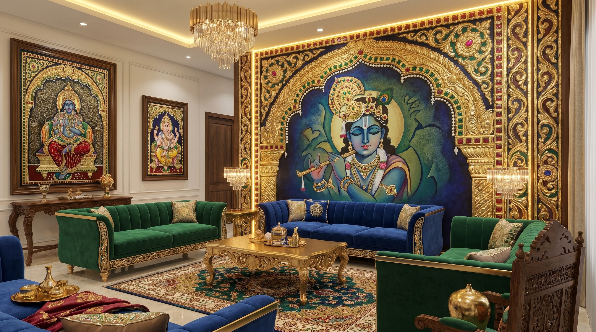
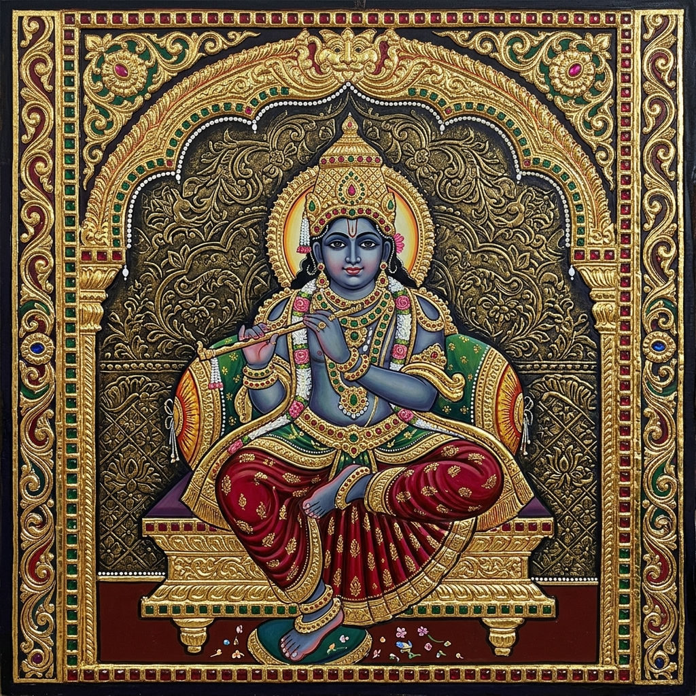
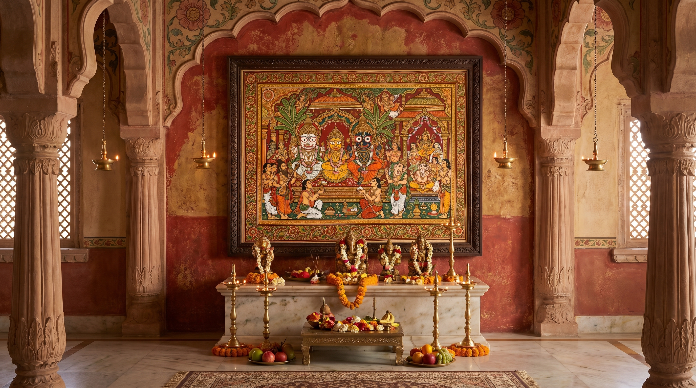
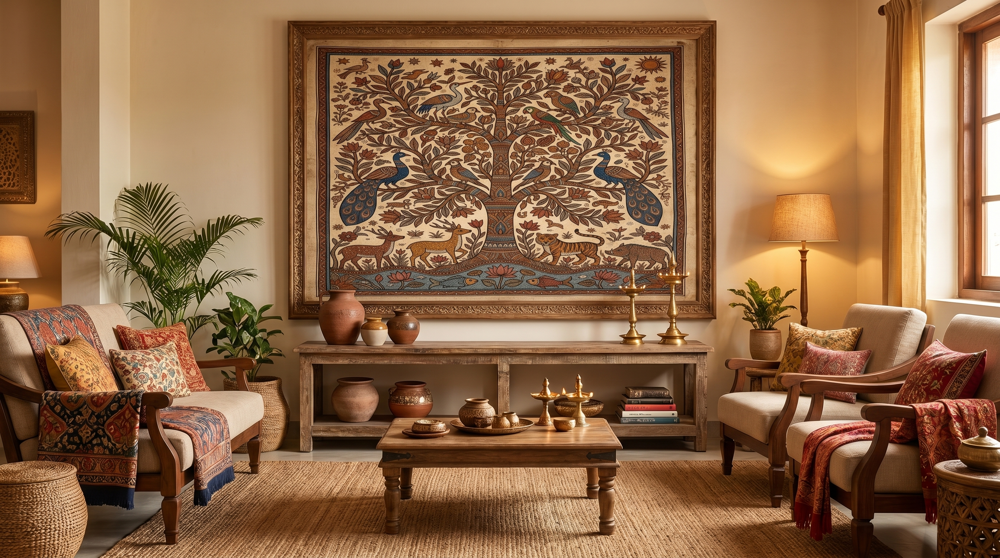
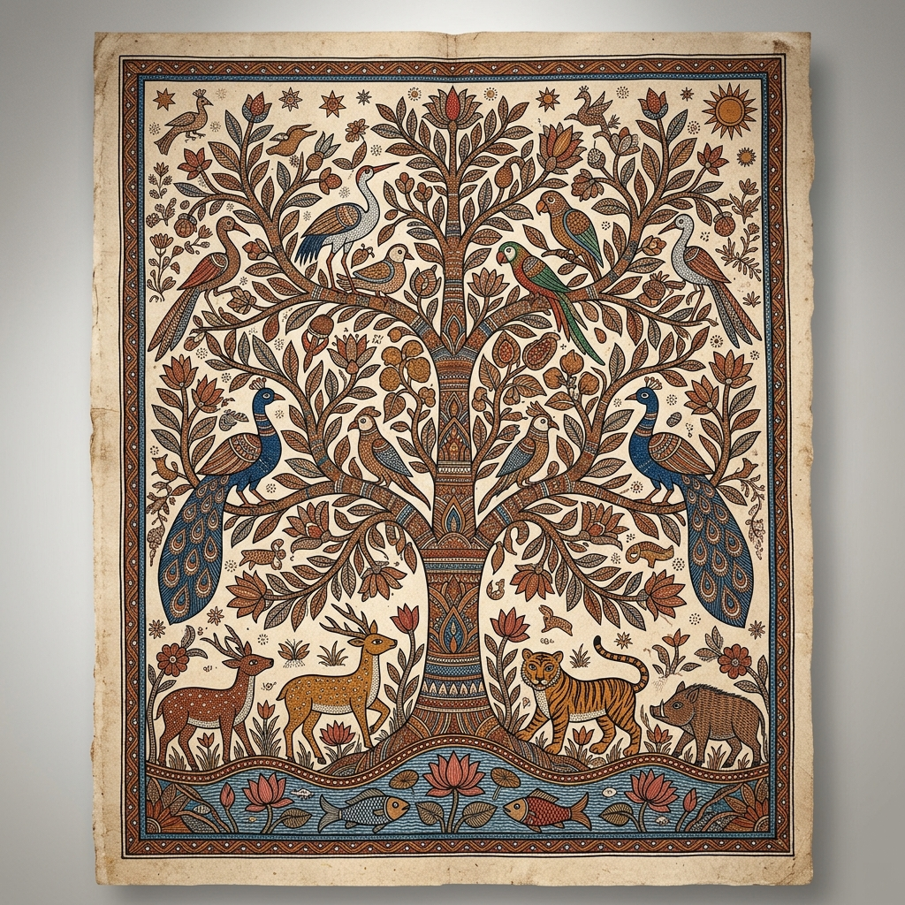
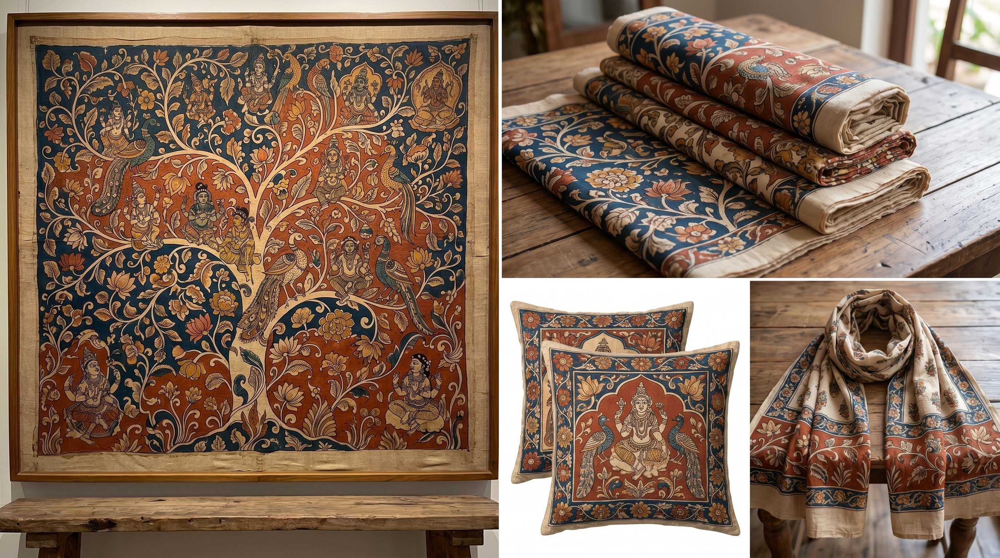
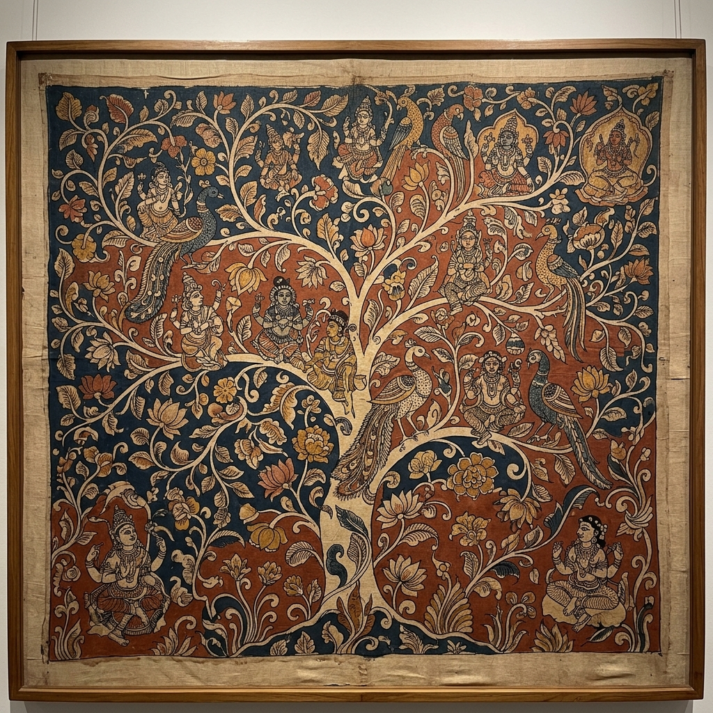
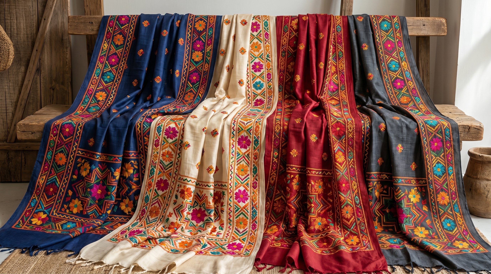
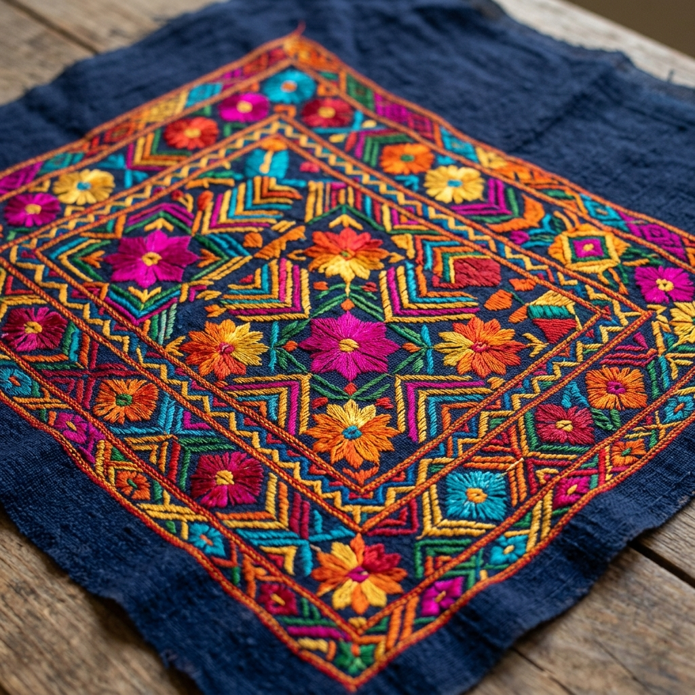

The Gilded Legacy: Tanjore Art
Sacred gold-leaf paintings from Tamil Nadu, known for their dense composition and surface richness.


Traditional Form
Rooted in the 16th century, traditional Tanjore art is a sacred craft utilizing gold foil and semi-precious stones to depict divine icons. Its significance lies in its "Palagei Padam" (picture on wood) technique, serving as a pillar of South Indian devotional heritage and temple aesthetics.
Modern Form
Today, Tanjore art has transitioned into luxury lifestyle spaces. Beyond deities, it is now used in modern portraiture, high-end architectural panels, and bespoke interior installations. Its modern usage emphasizes "textured luxury," blending ancestral techniques with contemporary secular themes and minimalist aesthetics.

Epic Scrolls: Pattachitra
Traditional cloth-based scroll painting from Odisha and West Bengal, depicting mythological narratives.

Traditional Form
Originating from the ritual service of Lord Jagannath, traditional Pattachitra is characterized by its floral borders and natural mineral pigments. It represents the pinnacle of scroll storytelling, where every line and color is governed by ancient iconography rules passed down through generations.
Modern Form
Modern Pattachitra has found a new life in "Art-on-Utility." From hand-painted designer sarees and kettle art to sustainable accessories and corporate gifting, the art form is now a symbol of eco-conscious luxury. It bridges the gap between folklore and functional modern design, keeping the heritage alive in daily life.
Tribal Rhythms: Gond Art
Vibrant tribal art from Madhya Pradesh, characterized by intricate dots and lines forming mythical stories.


Traditional Form
Traditional Gond art was a communal language of the Pardhan Gond tribe, painted on mud walls to celebrate nature and mythical spirits. Using a signature "dot-and-line" technique, it serves as a spiritual map of the tribe's connection with the forest, where every creature is interconnected.
Modern Form
In the modern world, Gond art has evolved into a powerhouse of contemporary illustration. Its vibrant patterns are utilized in global branding, high-fashion textiles, and boutique stationery. The modern usage highlights "primitive sophistication," making it a favorite for global collectors and modern graphic designers.

Sacred Penmanship: Kalamkari
Ancient style of hand-painted or block-printed cotton textile, produced in Andhra Pradesh.

Traditional Form
Traditional Kalamkari represents the soul of Andhra textile heritage, using 23 labor-intensive steps and natural dyes like indigo and pomegranate. It was the original "story-textile," where narrative scrolls depicted epics with an earthy, organic aesthetic that defined ancient Indian fashion.
Modern Form
Today, Kalamkari is a global icon of "Sustainable Luxury." Its patterns are featured in high-end resort wear, eco-friendly home furnishings, and luxury hotel interiors. Modern usage focuses on the "Hand-Painted" label as a mark of authenticity and slow-fashion, appealing to a generation that values artisanal ethics.
Silk Gardens: Phulkari
Flowery embroidery technique from Punjab, traditionally used on shawls and dupattas.


Traditional Form
Traditional Phulkari was an intimate domestic art of Punjab, where women embroidered "Bagh" (gardens) of silk on hand-spun khaddar. It was more than embroidery; it was a rhythmic documentation of life's milestones, with every stitch symbolizing prosperity, love, and maternal blessings.
Modern Form
Modern Phulkari has exploded onto the international runway and luxury accessories market. From embroidered leather bags to high-fashion bridal couture, it is now celebrated for its geometric boldness. Modern usage emphasizes "heritage chic," where ancestral patterns are re-imagined for the global cosmopolitan wardrobe.